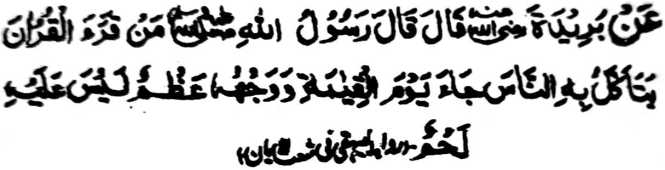
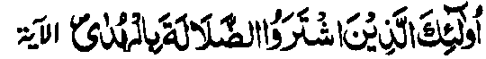

Miyakathitayan ko Buraidah (Radhiallaho ‘Anho) a pitharo iyan a pitharo o Rasulollah (Sallallaho ‘Alaihi wa Sallam), “Sa tao a matiya sa Qur’an ka aden mapakakan o manga tao na makatalingoma ko Gawi-i a Qiyamat a so paras iyan na daden a sapo iyan.”
Aya ma-ana ini na so siran a aya ipembatiya iran ko Qur’an na an niran makowa so kipantag iran sangka-iya donya na daden a mapembagi-an niran ko Alongan a Maori.
Pitharo o Rasulollah (Sallallaho ‘Alaihi wa Sallam), “Pembatiya-an tano so Qur’an. Aden a ped tano a manga Arab ago so kena ba manga Arab. Tatarosen niyo den so kapembatiya-a niyo ron imanto. Diden mathay na aden a nggemao a manga tao a phamaka-titho niran so kabatiya-a ko pithanggisa-an a batang o Qur’an sa lagid o pana, ma-ana aya ipagawid iran a akal na so gi-i ran kapharasi ago pezenggayan niran sa mala a oras so kapephakapiya-a iran ko kapekhabalesa ko pithanggisa-an a batang. Pheromasayan niran so koropan. Ogaid na langona-i na pantag bo ko donya. Tanto a maito a awida akal iran ko Alongan a Maori.”
Giyangka-iya a Hadith a inosay niyan pen a opama ka ayabo a awida akal na so kabatiya sa mapiya lago na daden a gona niyan opama mada-on so Ikhlas o di na amay ka aya antap na so bo so donya. “...sa daden a sapo...” na aya ma-ana niyan na amay ka so manosiya na balowin niyan so piphaporo-an a nganin [ma-ana so Qur’an] a okit a iphangawiyagan ko maito-i kipantag a nganin sangka-iya a donya, na so mambo so piphaporo-an a angga-ota ko lawas iyan, ma-ana so paras, na phapasenon mambo so kata-id iyan.
Miyaka-isa na so ‘Imran ibn-e-Husain (Radhiallaho ‘Anho) na siyagadan niyan a tao a gi-i manolon a pembatiya-an niyan so Qur’an na oriyan niyan na pephamangeni ko manga ped a tao. Tantowa mikharata a ginawa niyan sangkoto a miya-ilay niyan sa pitharo iyan so ‘Inna Lillahi wa Inna Ilaihi Raje’oon’ [Mata-an a rek kami o Allah ago mata-an a Ron kami pagendod]. Pitharo iyan a miyaneg iyan so Rasulollah (Sallallaho ‘Alaihi wa Sallam) a sa tao a batiya-an niyan so Qur’an na pangeniya niyan so langon o mazisinganin niyan ko Allah. Diden mathay, na phakagemao a manga tao a mbatiya-an niran [so Qur’an] oriyan niyan na phamangeni siran ko manga ped a tao.
Miyapanothol a pho-on sa isa ko manga Olama a “Aya ibarat o tao a gi-i niyan zokaten so kawiyagan niyan sa donya a nggolalan ko ‘ilmo ko Agama na lagid o tao a ipetherapo niyan so talompa iyan ko paras iyan.” Apiya giyangkoto a talompa na maimo ogaid na giya ngkoto a ola-ola na kalalalongan. Giyoto so manga tao a inaloy sangka-iya Ayaat sa Qur’an:

“Siran man so inipamusa iran ko kadadag so toro-an. Na da makalaba so kiyandagang iran, go da siran makakedeg sa ontol.” (Surah Al-Baqarah: 16)
Imanto na thoma ini pantag ko manga Huffaz a gi-i mangenda-o ko manga madrasah a pantag bo sa pirak. Pephamangenin [kiran] a begi ran sa madalem a pamikiran so betad iran ago so atas-tanggongan niran. Giyangka-iya a di patot a ola-ola iran na gi-i phapa-awingen ago biyaloy a dalina o saba-ad a kitareg o kapembatiya-a ago kiphelangagen ko Qur’an. Siran na kenabo o ba siran-i khasabapan ko marata a onga [o ola-ola iran a kakowa sa sokay] ka giyapen angkanan a manga Huffaz na ped siran a khasenditan ko kitareg o kapembatiya-a ko Qur’an.
Giyangka-iya a manga Huffaz na aya pikir iran non na siran na gi-i ran mipanolon so Qur’an, ogaid na aya mata-an na siran-i phagalangon, mokit ko ribat a ola-ola ago manga rarata a ni-at. So manga ‘Olama na da iran pakaya so kakowa sa sokay pantag ko kipephangenda-on ko Qur’an ka oba baden aya mabaloy a antap. Aya mata-an, na aya titho a ni-at o manga guro na giyabo a kapakadayamang o kata-o ko Qur’an. Da-a sokay a ba niyan kadiyangka-i so kaporo o galebek a kipephangenda-on ko Qur’an. Giyangkanan a pekha-aloy a sokay na pantag bo ko kakowa o mathangka a singanin o ginawa a pipharo [o Agama] sabap ko kanget, lagid o kasisikoti ko tao.